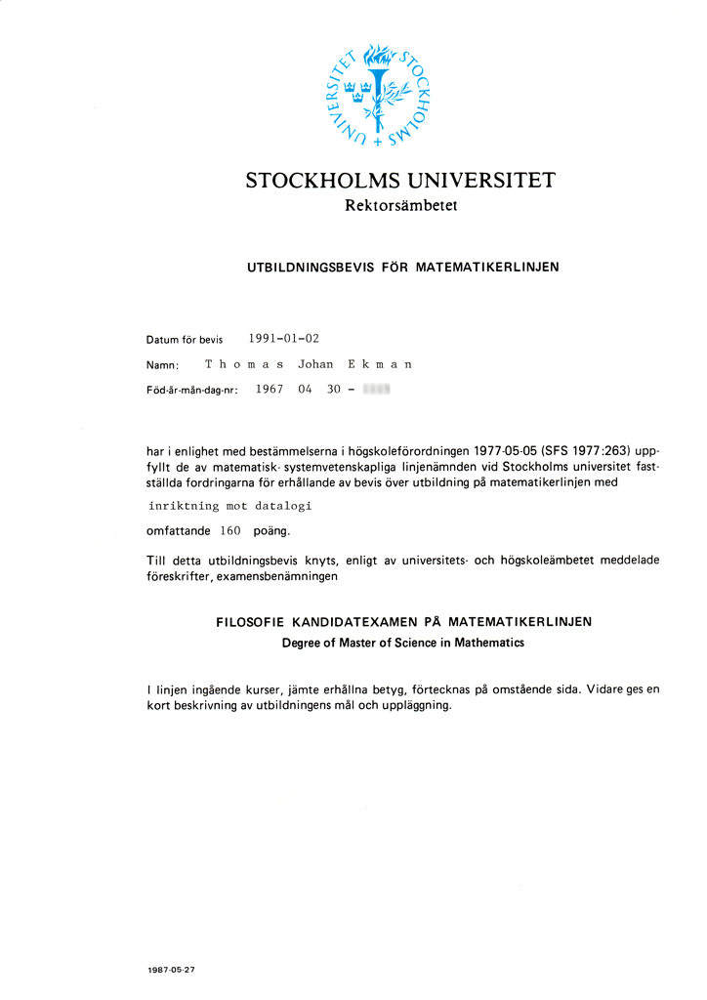
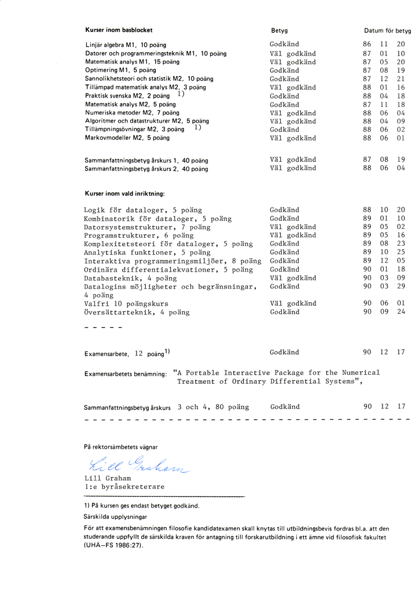

Utbildningar
Jag har gått Matematikerlinjen med inriktning mot datalogi på Stockholms universitet,
vilket utgör en bra bas att stå på som systemutvecklare i form av
abstrakt tänkesätt tillsammans med lång och bred erfarenhet inom IT-området.
Matematikkunskaper innebär träning i problemlösning, och det är kunskap som inte åldras med tiden.
Grundskoleåren
Jag har alltid varit intresserad av matematik från första årskurs i grundskolan,
och jag satt ofta med bredvidläsningsböcker i matematik under mellanstadiet.
När jag fick min första programmerbara miniräknare i högstadiet grabbade jag tag i manualen
och programmerade in formler och programsnuttar.
Ungefär samtidigt som jag fick min första programmerbara miniräknare fick jag min första dator,
en Texas Instruments TI-99/4A, där man fick spara ner programmen på en kassettbandspelare.
Jag älskade att programmera på denna dator. Detta var min första kontakt med datorer.
Gymnasieåren
När det blev dags att välja gymnasieinriktning var Naturvetenskaplig linje ett självklart val.
Jag gick på Enskilda Gymnasiet vid Tegnérlunden i Stockholm, och den hade en dataloginriktning.
Datasalen var utrustad med Apple II-datorer, och jag försökte sitta vid dessa på raster mm.
Jag genomförde min gymnasieutbildning under åren 1983 till 1986, och jag gick ut med mycket bra betyg
från Enskilda gymnasiet. När det blev dags att söka in på högskolan fanns det bara ett
alternativ för mig - Matematikerlinjen.
Inför starten på högskolan köpte jag en bok om analys som hette "Calculus", och jag tillbringade sommaren
med att studera denna som en förberedelse inför universitetsstudierna.
Universitetsåren
På Matematikerlinjen fick man i årskurs tre välja inriktning, och jag valde dataloginriktning.
Sedermera fick man välja en termin fritt valda kurser, och många av mina kurskamrater valde då datakurser,
men jag valde kurser av numerisk analys-karaktär, då en sådan kunskapsbas inte åldras med tiden, och
datarelaterad kunskap får man ju i yrkeslivet i alla fall.
Man kan säga att det jag har tagit med mig från
matematikerlinjen är strukturerat analytiskt tänkande och en förmåga att bryta ner problem i delproblem.
Jag tog min examen 1991 med titlarna ”Degree of Master of Science in Mathematics” och
”Filosofie Kandidatexamen på Matematikerlinjen”. Klicka på bilderna nedan så öppnas de i ett nytt fönster.
Därefter genomförde jag militärtjänstgöringen.


Ytterligare studier
Jag tog några år senare ett antal universitets- och högskolekurser i ämnen rörande teknisk datasäkerhet och kryptering,
algoritmer och dylikt samtidigt som jag arbetade.
Jag läste även en kurs i Abstrakt Algebra några år senare. Sammanräknat blev det en termins studier.